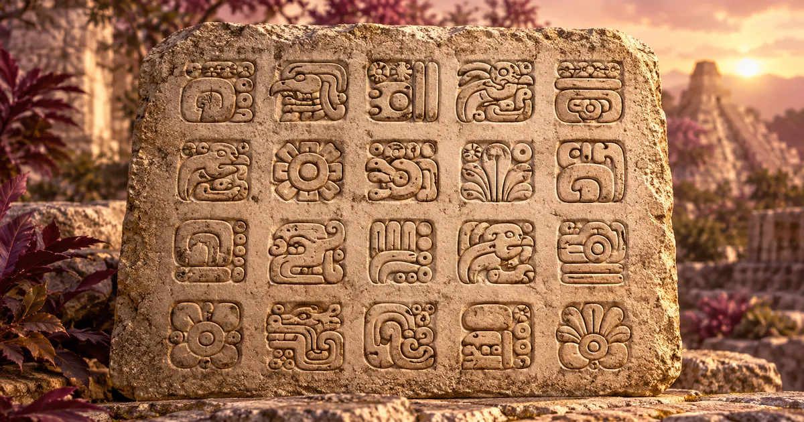
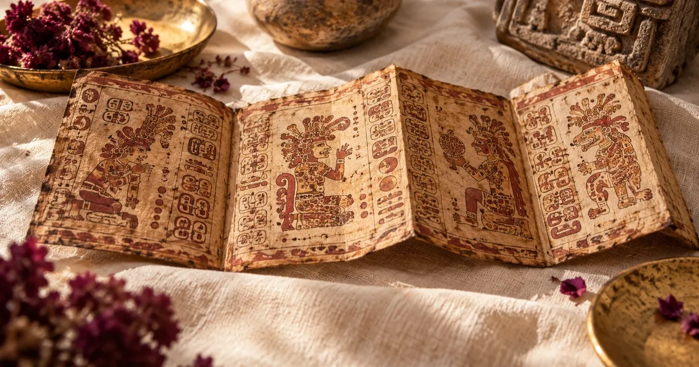

1
Gratuit · sans inscription
Ton signe maya
Pour les Mayas, le jour de naissance porte un nombre et un signe du Tzolk'in, le calendrier sacré de 260 jours. Découvre les tiens, ce qu'ils racontent de toi et de ta lignée, et apprends comment comptait l'une des plus grandes civilisations des Amériques.
Les signes de ta famille
Ajoute les dates de naissance de tes proches. Les signes ou les nombres qui reviennent d'une génération à l'autre peuvent ouvrir des questions sur ce qui se transmet.
| Prénom ou lien | Date de naissance | Jour maya |
|---|
Pour aller plus loin, dessine ton arbre familial : l'outil repère aussi les prénoms, les âges et les dates qui se répètent.
À deux
Ton signe et celui d'un proche
Ton enfant, ta mère, ton amoureux ou ton amie : compare vos deux jours mayas. Ce qui vous relie, ce qui vous différencie, et comment vos forces peuvent se soutenir.
Apprendre
Comprendre les Mayas
Sept chapitres courts pour découvrir comment comptait l'une des plus grandes civilisations des Amériques. Touche celui qui t'intrigue.
2
Plusieurs calendriers qui s'emboîtent
3
Lire un jour du Tzolk'in
4
Les vingt signes

Clique sur un signe pour lire son sens. Le premier nom est yucatèque, le second k'iche', la langue des gardien·nes du jour dont la tradition sert de référence ici.
5
Et le « kin » ou la « signature galactique » ?
6
Le 21 décembre 2012
7
Les codex, des livres sauvés du feu

Une culture vivante
Pour aller plus loin
Le calcul utilise la corrélation dite GMT (584283), la plus admise par les spécialistes et celle qui correspond au compte des communautés k'iche' du Guatemala. Notre lecture est une introduction simplifiée et symbolique : elle ne remplace pas la parole d'un ou d'une ajq'ij.
Questions fréquentes
Comment connaître son signe maya ?
Entre ta date de naissance : le calcul trouve ton jour dans le Tzolk'in, le calendrier sacré de 260 jours. Ce jour associe un nombre de 1 à 13 et l'un des 20 signes, par exemple 7 Kej. Genesolia utilise le compte traditionnel tenu par les gardien·nes du jour mayas.
Pourquoi mon signe maya est-il différent sur d'autres sites ?
Beaucoup de sites utilisent le « Dreamspell », un système créé à la fin des années 1980, qui ne suit pas le compte traditionnel. Les deux donnent souvent des signes différents pour la même date. Genesolia suit le compte maya traditionnel, celui qui n'a jamais été interrompu dans les hautes terres du Guatemala.
Le calendrier maya prédit-il l'avenir ?
Non. Le signe du jour de naissance est une lecture symbolique du caractère et de la place de chacun, telle que la tradition la décrit. Le 21 décembre 2012 n'a d'ailleurs jamais été présenté par les Mayas comme une fin du monde : c'était la fin d'un grand cycle de leur Compte long.